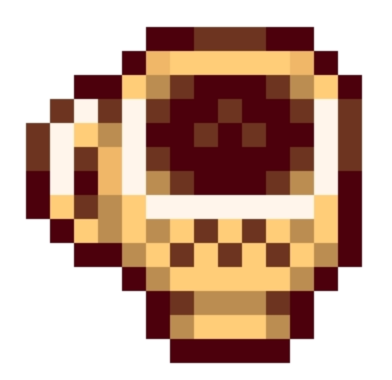

DESCRIÇÃO
Stardew Valley (2016) - Expresso Triplo (Triple Shot Espresso)
-> é uma das bebidas mais populares e cruciais de Stardew Valley, funcionando como o combustível
definitivo para os jogadores que querem máxima produtividade na fazenda ou agilidade nas minas.
Aparição: pode ser comprada diretamente com o Gus no Saloon Fruta Estrelar (Stardrop Saloon) por
5.000g a qualquer momento do jogo.
INGREDIENTES
- 3 doses de café expresso (cerca de 90ml no total)
- 1 colher (chá) de açúcar mascavo ou demerara (opcional, para equilibrar o amargor mantendo o tom escuro do jogo)
- Cacau em pó, uma pitada (opcional, para dar profundidade ao sabor)
MODO DE PREPARO
- Extrair os expressos: Prepare 3 doses seguidas de café expresso utilizando grãos de torra escura e moagem fina. Se você tiver uma máquina de expresso (manual ou de cápsula), faça as três extrações direto na mesma caneca.
- Alternativa sem máquina: Se você não tiver uma máquina de expresso, prepare um café coado bem forte (estilo turco ou usando uma cafeteira italiana/Moka), reduzindo a quantidade de água pela metade para concentrar o sabor. Use cerca de 90ml desse café super concentrado.
- Adoçar e finalizar: Adicione o açúcar mascavo enquanto o café ainda estiver bem quente para que ele dissolva por completo. Salpique a pitada de cacau em pó por cima se quiser um toque extra de aroma.
- Servir quente: Beba imediatamente na sua caneca favorita para garantir o bônus de velocidade para o resto do seu dia!